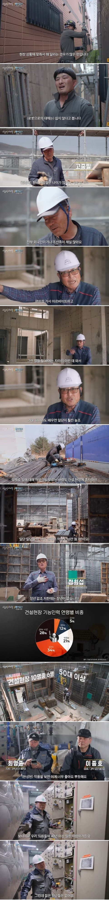

"왜 젊은 사람들이 안오지?"

"왜 젊은 사람들이 안오지?"
천한일이 아니라 그 바닥에서 있는사람들이 천한 언행하는게 압도적임
ㄹㅇ 요즘 작업자 대부분이 괜찮은데 한둘 인성 씹창난 50대후반~70대초반이 있음
그게 천한거아닌가요
천한 일이랑 사람이 천한 언행을 하는거랑 어떻게 같음?
생각해보니까 다르긴한데 블루칼라 야가다는 한국인 정서에서 천한일 맞잖아
천한 언행을 하는 사람들이 압도적으로 많은 직종 = 천한 사람들이 많이 한다 = 저 일을 하는 것은 진흙탕으로 스스로 들어가는 길이다 = 천한 일.
의 메커니즘인거지 ㅋㅋㅋㅋㅋ
하는일이 암만 고고하고 명예로워도 그 일을 하는 사람들의 대부분이 천한 짓을 일삼는 사람들이라면 뭐 ㅋㅋㅋㅋ
그 일이 과연 끝까지 고고하고 명예로운 직종으로 남을수있을까????
결국 사람이 하는 일이라서 어쩔수없다고봄
반도체 건설 이거 때문에 야가다 정상됨
저런 야가다는 외국인 조선족이나 한국사람이나 일당은 똑같이 쳐줌?
ㅇㅇ
ㅇ 같음
어디 가나 사람 간의 트러블은 꼭 있죠.. 저런 곳도 있고 아닌 곳도 있고.. 직종에 관계없이 그러하니.. 이런거 보고 선입견은 갖지 말아야 함
선입견은 안가지려고 하는데 내가 하긴 싫음
어짜피 노가다 할거면 전기해라. 50이상 먹은거 아니면 무정전까지 따고
전기는 전부 한국인에 말좀 통하는 사람들이 많더라 ㅋㅋㅋ
적어도 공부를 하려는 의지를 가진 사람들이기 때문인듯ㅋㅋㅋㅋㅋㅋ
지식, 교양, 배움의 의지라는 것은 쉽게 얻는게 아니니깐
입문이 어려워서 그렇지
?? 거꾸로지
입문이 개같이 쉬우니까 온갖쓰레기같은 인간들도 쉽게 들어오니까 저런거아님?
지들 잡일 시킬사람만ㅊ찾으니까 안가지
난 안좋은 기억도 있지만 좋은기억이 더 많아서 해보는것도 좋다고 봄
직장 퇴사하고 한참 방황할때 인력사무소 나갔는데
우연히 만난 나이 지긋하신 목수 오야지분이 잡부로 일하지 말고 기술이나 배우라고 해서 목수 조공으로 6개월 일했었음
일은 더 빡셌는데 사람사는 얘기 조언등 해주시면서 부려먹어서 감사한 마음으로 일 하다가
그라인더로 손목 짤릴뻔한적 있어서 일 그만두고 취업함
흔히 노가다 썰에 나오는 심연의 깊이가 다른 사람들은 보면
앰생 잡부들 비중이 높은거지 전문직들은 잘 못본거 같음
피곤한 성격인 사람들은 많이 봤지만...
잡부들 중에서도 상황이 열약해서 어쩔수 없이 일하시는 좋은 사람들도 많음
사람들이 몰리는건 이유가있다.
안가는것도 이유가있음
나도 원청소속 비정규 알바로 현장 관리자로 1년 일해보긴했는데 노가다 아저씨들 거칠긴한데 사람들 착한면이 있음
잘 모른다고 알려달라하면 알려주는거 좋아하고 회사 간식 아저씨들 전해주면 고마워하고
근데 나같이 좋은 기억이 있는건 그냥 하루 넘어가고 인터넷에 글쓰고 그러진 않지만 저런 부정적인 케이스가 있기야 하겠지만 꼭 인터넷에 글쓰니까 저런 인식이 생기는듯
부모님은 노가다, 식당 이런데서 힘들게 일하는데 자식은 부모 등골 빼먹으면서 자기는 저런 천한 일 못하는 천룡인인줄 아는게 참 병신스러움 이라고 예전에는 생각 했는데 내가 야가다 안 할거라고 너무 쉽게 얘기 하는거라는 깨달음을 얻음 뭐 당사자들이 각자 알아서 하겠지
노가다 단기 목돈 마련용으론 나쁘지 않다
ㅎㅎ나도 인력사무소다닐때 현장소장 눈에들어서 몇달따라댕기면서 돈좀벌었다. 내가할때만해도 외국인들은 뭐 10분의1정도였는데 요즘은 그반대인거같아서 ㄷㄷㄷ 노가다할때가 마음은 젤편했다~
조선족 외국인이 많은 이유가
같은 출신이면 텃세 안부리고 일 팍팍 가르쳐줘서 빨리 숙련공 만들어서 그런거라던데
한국은 일 못배우게하고 시다바리 몇년 시켜야 가르쳐줄까말까하고
건설 업계 자체가 어떤가 요즘
젊은 사람 x
어리고 반항 안할 노예 o
돈 많이주기 싫어하잖아
시발롬들
ㅈ도 아닌 기술은 밥그릇 뺏길라 겁나서 텃세부리고
월급은 깎아먹으면 그나마 양반이지
몇달은 적응기간이니 염병이니 하면서 무급으로 굴릴려고 하는 새끼가 있질 않나
오히려 돈내고 들어오라는 새끼가 있질 않나
젊은 사람들 많이도 찾아가겠다 그쟈 ㅋ
정년이 왜 없어...
몸 망가지면 그게 정년 퇴직이지...
텃세 존나 부리고 돈도 제대로 안주고 부려먹으려고 하니까 안가는거지
중국인을 비롯한 외국인들
특히 중국인들은 같은 중국인들한테 기술같은거 바로 하나하나 다 알려주더라
그래서 저쪽은 외국인들이 파이 장악중임
ㅅㅂ 대학생때 돈벌려고 알바한다고 인력사무소 갔다가 철근만드는 공장같은곳가서 분류하고 옮기고 작업하는 곳 갔는데
뭐 요령이나 간단한 작업들도 가르쳐주지도않고 그냥 일단 하라고 하는거? 일단 ㅇㅋ
그냥 일당챙겨가는 알바입장이니까 했지.
근데 철근 다발 뭉쳐져있는거 두꺼운 끈을 도구로 자르면 철근 순간적으로 풀리면 이라 발이나 손 한번이라도 스치면 깔려서 부러지는 상황이었는데
나보고 가위하나주면서 자르고 오라고 하는거보고 진심 공포느끼고 안함.
결국 기존작업자가 나보고 인상쓰면서 욕으로 궁시렁궁시렁거리면서 그 작업하다가 풀려서 나오는 철근에 손가락 스쳐서 푸르댕댕해지고 병원가는거보고 그 후로 거기는 안갔다 ㅅㅂ
씽크대만 거진 10년째인데.
오래할것같으면 잘알려줌 근데 딱봐도 얼마안하고 나갈것 같으면 알려주기힘들더라
알려주면 나가버려서
평택에서 중국인들이랑 부대끼면서 야가다 3년 해봤는데
만나는 사람마다 싹싹하게 인사 잘하고 꾸벅꾸벅 했더니
일을 알려주는게 아니라 개좆으로 보더라
내가 십장이랑 단가 똑같이 맞춰달라는 것도 아니고
뭐 그렇다고 나보다 쎄멘가루 1년은 더 마신 선배들만큼 달라는것 조차 아니고
근데도 현장 아재들 당시 단가 12만원 잡는거 난 9만원 잡고
그마저도 아쎼이라고 곰빵같은 몸은 고된데 단순한 작업만 시키다가
점심시간 두어시간 지나면 집에 가라고 퇴짜놓고 반공수 채워주더라
그리고 알다시피 사무소에서 10% 떼가고
그럼 난 반나절 좆고생하고 4만원 받는거다 목욕비 식비하면 끝 ㅋㅋ
뭐 물론 매일 그런건 아니지만 비일비재함
노가다에서 기술을 배우라고?
본문 말대로 뭐하나 구경이라도 할라치면 쳐놀면서 돈받으러 왔냐고 구박받는다 ㅋㅋ
왜 없겠냐들 ㅋㅋㅋ
븅슨빡대갈통들 에휴 ㅋㅋㅋㅋ
삼전닉스갈거야
이러니저러니해도 야가다 인식이 천한일 한다고 보여지긴하니까 남들눈치 많이보는 한국인이 쉽게 못해